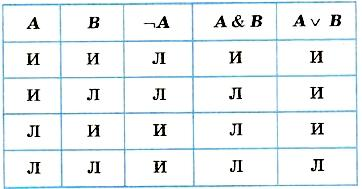
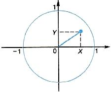
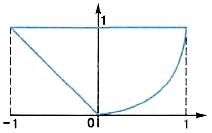
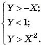
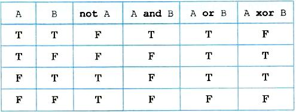

Логические величины, операции, выражения
С элементами математической логики вы уже могли встречаться, изучая способы записи запросов к базе данных и условной функции если в электронных таблицах, основы алгоритмизации и программирования. Повторим основные понятия логики с целью дальнейшего углубления ваших знаний в использовании ее для программирования.
К числу основных понятий логики относятся: высказывание, логическая величина, логические операции, логические выражения и формулы.
Высказывание (суждение) — это повествовательное предложение, в котором что-либо утверждается или отрицается. По поводу любого высказывания можно сказать, истинно оно или ложно.
Например, высказывание «На улице идет дождь» будет истинным или ложным в зависимости от состояния погоды в данный момент. Истинность высказывания «Значение А больше, чем Б», записанного в форме неравенства: А > В, будет зависеть от значений переменных А и В.
Логические величины — понятия, выражаемые словами: истина, ложь (true, false). Следовательно, истинность высказываний выражается через логические величины.
Логическая константа — истина или ложь.
Логическая переменная — символически обозначенная логическая величина. Следовательно, если известно, что А, В, X, Y и др. — переменные логические величины, то, значит, они могут принимать значения только истина или ложь.
Логическое выражение — простое или сложное высказывание. Сложное высказывание строится из простых с помощью логических операций (связок).
Логические операции
Конъюнкция (логическое умножение). В русском языке она выражается союзом И. В математической логике используются знаки & или ∧. Конъюнкция — двухместная операция; записывается в виде: А & В. Значением такого выражения будет ложь, если значение хотя бы одного из операндов ложно.
Дизъюнкция (логическое сложение). В русском языке этой связке соответствует союз или. В математической логике она обозначается знаком v. Дизъюнкция — двухместная операция; записывается в виде: A ∨ В. Значением такого выражения будет истина, если значение хотя бы одного из операндов истинно.
Отрицание. В русском языке этой связке соответствует частица не (в некоторых высказываниях применяется оборот «неверно, что ...»). Отрицание — унарная (одноместная) операция; записывается в виде: ¬А или A.
Правила выполнения рассмотренных логических операций отражены в следующей таблице, которая называется таблицей истинности логических операций (здесь И означает «истина», Л — «ложь»):
Логическая формула — формула, содержащая лишь логические величины и знаки логических операций. Результатом вычисления логической формулы является истина или ложь.
Последовательность выполнения операций в логических формулах определяется старшинством операций. В порядке убывания старшинства логические операции расположены так:
- Отрицание
- Конъюнкция
- Дизъюнкция
Например:
(A & B) v (¬A & B) v (¬A & ¬B)
Пример. Вычислить значение логической формулы:
¬X & Y v X & Z
если логические переменные имеют следующие значения: X = ложь, У = истина, Z = истина.
Решение. Отметим цифрами сверху порядок выполнения операций в формуле:
1 2 4 3
¬X & Y v X & Z
Используя таблицу истинности, вычислим формулу по шагам:
- ¬ ложь = истина
- истина & истина = истина
- ложь & истина = ложь
- истина v ложь = истина
Ответ: истина.
Логические функции на области числовых значений
Алгебра чисел пересекается с алгеброй логики в тех случаях, когда приходится проверять принадлежность значений алгебраических выражений некоторому множеству. Например, принадлежность значения числовой переменной X множеству положительных чисел выражается через высказывание: «X больше нуля». Символически это записывается так: Х > 0. В алгебре такое выражение называют неравенством. В логике – отношением.
Отношение X > О может быть истинным или ложным. Если X – положительная величина, то оно истинно, если отрицательная, то ложно. В общем виде отношение имеет следующую структуру:
<выражение 1> <знак отношения> <выражение 2>
Здесь выражения 1 и 2 — некоторые математические выражения, принимающие числовые значения. В частном случае выражение может представлять собой одну константу или одну переменную величину. Знаки отношений могут быть следующими:
- = — равно;
- ≠ — не равно;
- ≥ — больше или равно;
- ≤ — меньше или равно;
- > — больше;
- < — меньше.
Например:
x=5; a + b ≠ x - 1; b2 - 4ac ≥ 0; sin(x) < x/2
Итак, отношение — это простое высказывание, а значит, логическая величина. Оно может быть как постоянной: 5 > 0 – всегда истина, 3 ≠ 6 : 2 – всегда ложь; так и переменной: а < b, х + 1 = с - d. Если в отношение входят переменные числовые величины, то и значение отношения будет логической переменной.
Отношение можно рассматривать как логическую функцию от числовых аргументов. Например: f(x) = (х > 0) или p(х, у) = (х < у). Аргументы определены на бесконечном множестве действительных чисел, а значения функции – на множестве, состоящем из двух логических величин: истина, ложь.
Логические функции от числовых аргументов еще называют термином предикат. В алгоритмах предикаты играют роль условий, по которым строятся ветвления и циклы. Предикаты могут быть как простыми логическими функциями, не содержащими логических операций, так и сложными, содержащими логические операции.
Пример 1. Записать предикат (логическую функцию) от двух вещественных аргументов x и y, который будет принимать значение истина, если точка на координатной плоскости с координатами x и y лежит внутри единичной окружности с центром в начале координат:
Из геометрических соображений понятно, что для всех точек, лежащих внутри единичной окружности, будет истинным значение следующей логической функции:
ƒ(x, y) = (x² + y² < 1)
Для значений координат точек, лежащих на окружности и вне ее, значение функции ƒ будет ложным.
Пример 2. Записать предикат, который будет принимать значение истина, если точка на координатной плоскости с координатами x и y лежит внутри кольца с центром в начале координат, и радиусами R1 и R2.
Поскольку значения R1 и R2 – переменные величины, искомая логическая функция будет иметь четыре аргумента: x, y, R1, R2. Возможны две ситуации:
- R1² < x² + y² < R2² и R1 < R2: R1 – внутренний радиус, R2 – внешний радиус;
- R2² < x² + y² < R1² и R2 < R1: R2 – внутренний радиус, R1 – внешний радиус.
Объединив дизъюнкцией оба этих утверждения и записав их по правилам алгебры логики, получим следующую логическую функцию:
ƒ(x, y, R1, R2) = (((x² + y²) > R1²) & ((x² + y²) < R2²) & R1 < R2) v (((x² + y²) > R2²) & ((x² + y²) < R1²) & R2 < R1)
Пример 3. Записать предикат, который будет принимать значение истина, если точка на координатной плоскости с координатами x и y лежит внутри фигуры, ограниченной жирными линиями
Фигура ограничена тремя границами, описываемыми уравнениями:
- y = -x – левая граница, линейная функция;
- y = 1 – верхняя граница, константа;
- y = x² – правая граница, парабола.
Рассматриваемая область есть пересечение трех полуплоскостей, описываемых неравенствами:
Во внутренних точках все эти три отношения являются одновременно истинными. Поэтому искомый предикат имеет вид:
ƒ(x, y) = (y > -x) & (y < 1) & (y > x²)
Логические выражения на Паскале
Уже говорилось о том, что в Паскале имеется логический тип данных.
Логические константы: true (истина), false (ложь).
Логические переменные: описываются с типом Boolean.
Операции отношения: осуществляют сравнение двух операндов и определяют, истинно или ложно соответствующее отношение между ними. Знаки операций отношения: = (равно), <> (не равно), > (больше), < (меньше), ≥ (больше или равно), ≤ (меньше или равно).
Логические операции: not — отрицание, and — логическое умножение (конъюнкция), or — логическое сложение (дизъюнкция), xor — исключающее или. Таблица истинности для этих операций (Т — true; F — false):
Логическое выражение может состоять из логических констант и переменных, отношений, логических операций. Логическое выражение принимает значение true или false.
Например, логическая формула ¬Х & Y ∨ X & Z на Паскале запишется в виде следующего логического выражения:
not x and y or x and z
где X, Y, Z — переменные типа boolean.
Логические операции располагаются в следующем порядке по убыванию старшинства (приоритета):
- not
- and
- or, xor
Операции отношения имеют самый низкий приоритет. Поэтому если операндами логической операции являются отношения, то их следует заключать в круглые скобки. Например, математическому неравенству 1 < X < 50 соответствует следующее логическое выражение:
(1 <= x) and (x <= 50)
Логическая функция odd(x) принимает значение true, если значение целочисленного аргумента х является нечетным, иначе – false.
Для правильной записи сложного логического выражения (предиката) нужно учитывать относительные приоритеты арифметических, логических операций и операций отношений, поскольку все они могут присутствовать в логическом выражении. По убыванию приоритета операции располагаются в следующем порядке.
- Арифметические операции:
- - (минус унарный)
- *, /
- +, -
- Логические операции:
- not
- and
- or, xor
- Операции отношения:
- =, <>, >, <, >=, <=
Ещё раз обратите внимание, что в логическом выражении, соответствующем предикату из примера 3:
(y > -x) and (y < 1) and (y > x*x)
Операции отношения заключены в скобки, поскольку они младше логических операций, а выполняться должны раньше.